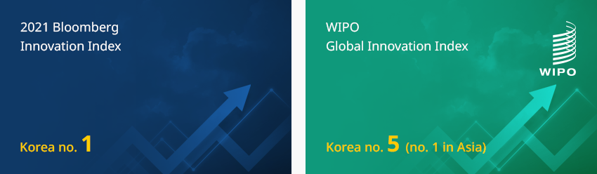

Financial Services
- Home
- Why KOREA
- Industry
- Financial Services
Financial Services
-
Korea's Innovative Ecosystem Emerging as an Attractive Investment Destination CloseKorea's Innovative Ecosystem Emerging as an Attractive Investment DestinationVenture capital creation and investment have been breaking records for several years in a row, and venture investment has been very active even amid the COVID-19 crisis.
Korea's venture ecosystem continues to grow and mature, thanks to the private sector's efforts to generate appropriate returns on investment as well as the government's commitment to using venture businesses as a driving force for the growth of the Korean economy and job creation.In 2021, Korea ranked first in the Bloomberg Innovation Index and fifth (no. 1 in Asia) in the Global Innovation Index of the WIPO. Korea has taken the top spot for several years in various innovation related evaluations. Korea is a very attractive place for investment with its well-established innovation ecosystem.- 2021 Bloomberg Innovation Index - Korea no. 1
- Global Innovation Index(WIPO Global Innovation Index) - Korea no. 5(no. 1 in Asia)
 Management-participatory PEFs (Buyout PEFs) are also growing steadily, with both the number of PEF establishments and investment amounts reaching new highs recently. PEF is strengthening its influence as a key player in the field of corporate mergers and acquisitions, such as listing after enhancing corporate value and selling after merger between companies of the same type.The government is continuously developing policies for venture businesses and venture capital promotion, and institutional improvements, such as deregulation of PEFs, are also being made continuously.The government announced a policy to become one of the four global venture powerhouses in August 2021. The PEF system has been updated and regulations on PEF asset management have been eased since October 2021, continuously improving the investment conditions for venture capital and PEF.
Management-participatory PEFs (Buyout PEFs) are also growing steadily, with both the number of PEF establishments and investment amounts reaching new highs recently. PEF is strengthening its influence as a key player in the field of corporate mergers and acquisitions, such as listing after enhancing corporate value and selling after merger between companies of the same type.The government is continuously developing policies for venture businesses and venture capital promotion, and institutional improvements, such as deregulation of PEFs, are also being made continuously.The government announced a policy to become one of the four global venture powerhouses in August 2021. The PEF system has been updated and regulations on PEF asset management have been eased since October 2021, continuously improving the investment conditions for venture capital and PEF. -
Venture Capital and Venture Investment Hit All-time Highs OpenVenture Capital and Venture Investment Hit All-time HighsEven in the midst of the COVID-19 crisis in 2020, the formation of venture funds and venture capital investment continued to rise and hit new all-time highs.
The formation of venture funds in 2020 reached KRW 6.56 trillion, an increase of 54.8% compared to 2019, and an all-time high of 206 newly formed associations were recorded.
The formation of venture funds in 2020 broke the previous record of KRW 4.84 trillion in 2018 and exceeded KRW 6 trillion for the first time.Investment in venture companies in 2020 reached a record high KRW 4.30 trillion, although the growth rate decreased compared to the previous year.
Venture investment in 2020 increased by 0.6% compared to the previous year, slowing down compared to the 24.9% growth rate in 2019, but the number of investments (4,231 cases) and the number of investing companies (2,130 companies) also exceeded the first 4,000 cases and 2,000 companies, respectively. All were all-time highs.Venture fund formation performance Category, Year Category 2016 2017 2018 2019 2020 Venture Fund 37,793 45,881 48,470 42,433 65,676 Number of Associations 120 164 146 170 206 Venture Company Category, Year Category 2016 2017 2018 2019 2020 New Venture Investment 21,503 23,803 34,249 42,777 43,045 Venture Investment Company 1,191 1,266 1,399 1,608 2,130
※ Source: Ministry of SMEs and StartupsBy sector, six industries, including bio/medical, ICT, and materials/part/equipment (electrical/mechanical/equipment, chemical/materials, ICT manufacturing), that were highlighted due to the COVID-19 crisis drove the growth of venture investment in 2020. On the other hand, investment in the distribution/service and image/performance/record industries, where industries were generally damaged in the aftermath of COVID-19, decreased compared to 2019."Venture Investment in 2019 and 2020 by Sector"(Unit: KRW 100 million, %)Venture Investment in 2019 and 2020 by Sector Increased, Decreased, Increase (%), Year Increased 2019 2020 IRate of Increase (%) Decreased 2019 2020 Rate of Increase (%) Bio/Medical 11,033 11,970 8.5 Distribution/Service 8,145 7,242 -11.1 Electrical/Mechanical/Equipment 2,036 2,738 34.5 Chemistry/Materials 1,211 1,765 45.7 Image/Performance/Record 3,703 2,902 -21.6 ICT manufacturing 1,493 1,869 25.2 ICT service 10,446 10,764 3.0 Others 3,518 2,546 -27.6 Games 1,192 1,249 4.8 ※ Source: Ministry of SMEs and Startups(Unit: USD billion, numbers)Start-up Investment Companies (investment associations) and Investment Performance Category, Year(2010 ~ 2018) Category Start-up Investment Companies Investment Associations Investment Associations Amount Investment New Investment Amount Number of Companies ※ Source: Korea Venture Capital Association
※ Note: Investment associations include start-up investment associations and Korea venture investment associations.
※ Note: Associations are calculated for new associations by year and may vary depending on the time of calculation. -
Establishment of Management Participatory-type PEF and Continuous Growth of Investment OpenEstablishment of Management Participatory-type PEF and Continuous Growth of InvestmentManagement-participatory PEFs (Buyout PEFs) reached 855 as of the end of 2020, an increase of 134 from the previous year. The contracted amount to be invested by investors in PEFs was KRW 97.1 trillion, up 15.2% from KRW 84.3 trillion in the previous year, and the amount invested by investors in PEFs was KRW 70.6 trillion, up 12.6% from KRW 61.7 trillion in the previous year.The number of new PEFs established in 2020 totaled 218, an increase of 12 from the previous year (206). The amount of new funds raised by PEFs (contracted amount of new PEFs) in 2020 was KRW 17.9 trillion, an increase of KRW 2.3 trillion from the previous year (KRW 15.6 trillion). The amount of PEF investment in 2020 was KRW 18.1 trillion, an increase of KRW 2.1 trillion from the previous year (KRW 16 trillion).PEF investments were made to 565 domestic and foreign companies in 2020, of which 488 were domestic (86.4%) showing a fairly high degree of concentration on investment. In terms of investment amount, domestic investment recorded KRW 12.6 trillion and overseas investment recorded KRW 5.5 trillion."Number of PEFs, Contracted Amount, and Invested Amount; and Contracted and Invested Amount of New PEFs"
Number of PEFs, Contracted Amount, and Invested Amount Category, Year Category 2016 2017 2018 2019 2020 Contracted Amount 62.2 62.6 74.4 84.3 97.1 Invested Amount 43.6 45.5 55.4 61.7 70.6 Number of PEFs 383 444 580 721 855 The Contracted and Invested Amount of New PEFs Category, Year Category 2016 2017 2018 2019 2020 Contracted Amount 9.4 9.9 16.4 15.6 17.9 Invested Amount 8.9 12.4 13.9 16.0 18.1 Number of PEFs 109 135 198 206 218
※ Source: Financial Supervisory Service -
Advent of the 4th Industrial Revolution Growing Needs for Market-friendly Corporate Restructuring OpenAdvent of the 4th Industrial Revolution Growing Needs for Market-friendly Corporate RestructuringThe scale of venture capital in Korea has recently reached its highest level for several years in a row. Venture capital is enjoying a second boom. Structural changes, caused by the emergence of new industries related to the 4th industrial revolution, have provided new opportunities. The government has shown strong commitment to fostering venture companies related to the 4th industrial revolution as the driving force of the Korean economy.Management-participation type PEFs (Buyout PEF) have shown a steady growth. If the economic downturn is prolonged into the future, investment opportunities are expected to increase for PEFs. As Korean companies have a stronger tendency to preemptively pursue restructuring compared to the past, the number of high-quality stocks increases during the economic downturn, and PEF investment profitability is expected to improve significantly.
-
Activation of Investment in Domestic Venture Companies By Overseas Venture Capital (VC) OpenActivation of Investment in Domestic Venture Companies By Overseas Venture Capital (VC)Global venture investment institutions (PEF, VC, Accelerator) have been actively investing in Korean companies recently. If more successful cases accumulate in the future, the more mature the venture ecosystem and the more dynamic the market will be. The followings are the cases of recent venture companies attracting investment from global venture funds.
Major Cases of Global Venture Fund Investment Attractions Company, Latest News Company Latest News 
Ingradient, a data labeling company specializing in medical AI, attracted pre-series A worth KRW 1.4 billion from the YozmaGroup vision creator, Israel's first VC, in July 2021. The investment institution highly evaluated the technology and future vision of MediLabel, a medical AI data labeling solution developed by Ingradient. 
Yanolja, the largest travel and leisure platform company in Korea, attracted USD 1.7 billion (approx KRW 1.94 trillion) from SoftBank's Vision Fund, the world's largest venture investment fund, in July 2021. Yanolja is diversifying its revenue structure into an IT service company, rather than a simple lodging reservation company, by nurturing the cloud-based room reservation management system. Taleverse, a startup developing a user-participating story content platform, attracted a USD 2 million (approx KRW 2.3 billion) seed investment from Singapore VC GarenaVentures in October 2021. Taleverseis developing a story content platform that anyone can easily create at a much lower production cost than animation while having splendid visuals and dynamic motion by overcoming the shortcomings of existing web novels and webtoons. 
AI company MarqVision attracted KRW 3.6 billion in investment in April 2021 from YCombinator, the world's largest startup accelerator, and Base Investment and Danal Investment Partners, domestic investment institutions. MarqVision provides an AI-based counterfeit product monitoring service that detects fakes distributed on over 60 e-commerce platforms and various SNS channels in 23 countries, including Amazon, Coupang, Alibaba, and Taobao, and automates the deletion report. 
Robot startup BearRobotics, led by Softbank in January 2020, attracted USD 32 million (about KRW 37.1 billion) of Series A investment, the highest in the robot startup industry, from Lotte Accelerator, Smilegate, and DSC Investment. BearRobotics is leading service innovation in the restaurant market by developing an autonomous driving-based robot service (Servi). Improvement of Corporate Performance through Overseas PEFs Investing in Korean Companies Affinity Equity Partners- Acquired Burger King Korea from VIG Partners, a domestic private equity fund in 2016
- Average annual growth rate (CAGR) of Burger King for the past 5 years (2016-2020) is 22.57%
- Despite the aftermath of COVID-19, sales in 2020 increased by 14% to KRW 571.3 billion from the previous year
- The level increased by 2.25 times compared to 2016, the year of acquisition
- EBITDA also increased significantly to about KRW 59 billion last year, about three times higher compared to 2016
Global PEF Investment in Domestic Companies-
Geo-Young
- Company overview : Korea's largest pharmaceutical distributor
- Overseas investors : Black Stone (acquired for USD 1 billion, April 2019)
-
Serveone
- Company overview : No. 1 in the building management industry
- Overseas investors : Affinity (acquired for USD 550 million, June 2019)
Opening of Korean Corporations or Offices by Overseas VCs or PEFs- Goodwater Capital
- Black Stone
Global VC Investment in Domestic Companies-
Service: Delivery app (Woowa Brothers)
- Total investment : USD 4.5 billion
- Major foreign investors : Goldman Sachs Consortium (US), Hillhouse Capital Consortium (China), The Government of Singapore Investment Corporation Consortium, Delivery Heroes (Germany)
-
Service: Bank transfer app (Toss)
- Total investment : USD 700 million
- Major foreign investors : PayPal Consortium (US), Goodwater Consortium (US), Kleiner Perkins Consortium (US)
-
Service: Cloud operation software
- Total investment : USD 700 million
- Major foreign investors : Legend Capital Consortium (China), Singapore STT
-
Service: Real estate brokerage
- Total investment : USD 200 million
- Major foreign investors : Goldman Sachs Consortium (US)
-
Service: Messenger for companies
- Total investment : USD 100 million
- Major foreign investors : Shasta Ventures (USA), Iconic, Tiger Global Management
-
Service: Next-morning delivery (Market Kurly)
- Total investment : USD 300 million
- Major foreign investors : Sequoia Capital China, Hillhouse Capital Consortium (China)
※ Source: Chosun Biz (March 2018), IT Chosun (September 2019), mergemarket data (reprocessed) -
Growth Promotion Policy and PEF System Reform for Venture Investment and Venture Companies OpenGrowth Promotion Policy and PEF System Reform for Venture Investment and Venture CompaniesThe Venture Investment Promotion Act (hereinafter Venture Investment Act) was enacted in February 2020 and has been in effect since July of the same year. The Venture Investment Act integrated the venture investment systems that were scattered and created a consistent venture investment ecosystem. Regulations were also eased, for example, facilitation of private venture capital investment and angel investment by individuals.
For example, startup planners (accelerators) who discover promising companies, supply initial investment, and incubate them are allowed to form venture investment associations (investment funds) if certain conditions were met, such as professional manpower and capital. Deregulation was implemented by lowering the minimum investment required to establish a fund by KRW 2 billion to KRW 3 billion.The government is promoting a variety of initiatives, including the relaxation of issuance requirements, such as grant targets, so that venture companies can issue and utilize stock options widely; the promotion of the expansion of global venture funds and overseas VC networking that support venture companies' overseas investment and expansion; the introduction of a Silicon Valley-style venture fund governance structure to enhance inflow of foreign capital and accountability; new technology innovation M&A guarantees to raise funds for company acquisitions; and expansion of M&A funds to supply liquidity.Registration of Accelerators and Investment Amount Year(2017 ~ 2020) 2017 2018 2019 2020 Investment by Accelerators (KRW) 16,300,000,000 65,800,000,000 159,600,000,000 225,300,000,000 Investment by Accelerators (USD) 14,414,063.88 59,801,872.22 137,193,549.50 193,669,841.49 Investment by Accelerators (USD million) 14 60 137 194 ※ Source: Ministry of SMEs and Startups
※ Contributor: Korea Economic Research Institute


Invest KOREA